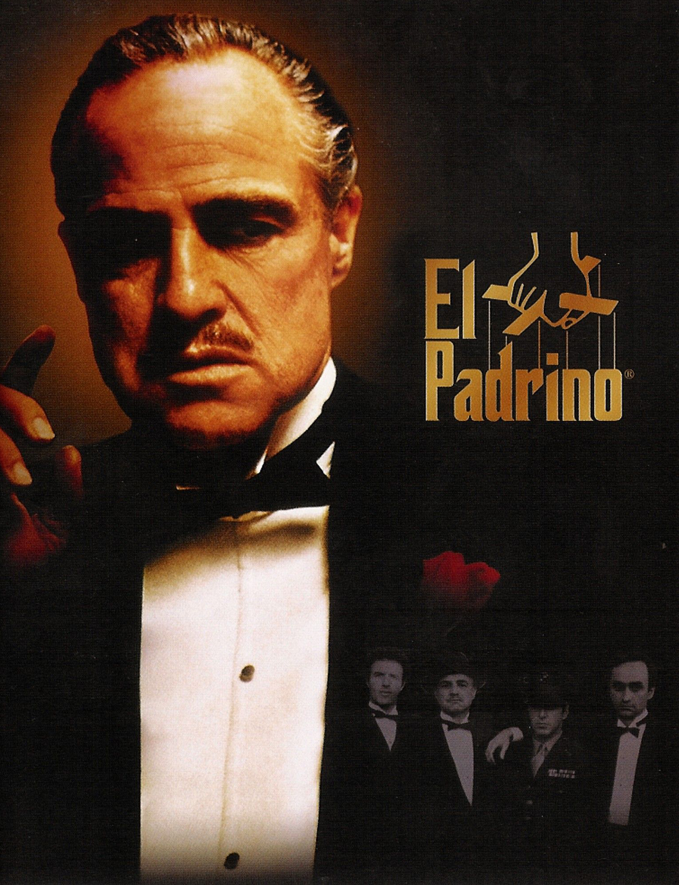

(unordered list). Los elementos dentro de esta lista se representan con viñetas o puntos. Cada elemento de la lista se define con la etiqueta
(list item).
Ejemplo:
HTML
Elemento 1
Elemento 2
Elemento 3
Código generado por IA. Revisar y usar cuidadosamente. Más información sobre preguntas frecuentes.
Listas Ordenadas
Las listas ordenadas se crean con la etiqueta (ordered list). Los elementos dentro de esta lista se representan con números o letras, indicando un orden específico. Al igual que en las listas no ordenadas, cada elemento de la lista se define con la etiqueta
.
Ejemplo:
HTML
Primer elemento
Segundo elemento
Tercer elemento
Código generado por IA. Revisar y usar cuidadosamente. Más información sobre preguntas frecuentes.
Diferencias Clave
Tipo de Marcador: Las listas no ordenadas
utilizan viñetas, mientras que las listas ordenadas utilizan numeración.
Semántica: Las listas no ordenadas son adecuadas cuando el orden de los elementos no importa, mientras que las listas ordenadas se utilizan cuando se necesita un cierto orden1.
Personalización
Puedes personalizar las viñetas de las listas no ordenadas y la numeración de las listas ordenadas usando CSS o atributos HTML.
Películas Famosas
El Padrino

Una saga épica sobre una familia de la mafia italoamericana, centrada en la figura de Vito
Corleone y su hijo Michael, quienes navegan por el peligroso mundo del crimen organizado
mientras intentan mantener el poder y proteger a su familia.
El Caballero Oscuro
Batman enfrenta al Joker, un criminal caótico que amenaza con sumir a Gotham en la anarquía.
La película explora temas de justicia, moralidad y el sacrificio personal que Bruce Wayne
debe hacer para proteger su ciudad.
Forrest Gump
La vida de Forrest Gump, un hombre con un corazón puro y una inteligencia limitada, que sin
embargo participa en eventos históricos significativos de los Estados Unidos, desde la
guerra de Vietnam hasta la creación de una exitosa empresa de camarones.
La Lista de Schindler
La historia de Oskar Schindler, un empresario alemán que salvó a más de mil judíos durante
el Holocausto empleándolos en sus fábricas. La película muestra su transformación de un
hombre de negocios oportunista a un héroe humanitario.
Inception
Un ladrón especializado en extraer secretos del subconsciente durante el sueño es contratado
para realizar una tarea aparentemente imposible: implantar una idea en la mente de una
persona. La película explora los límites entre la realidad y los sueños.